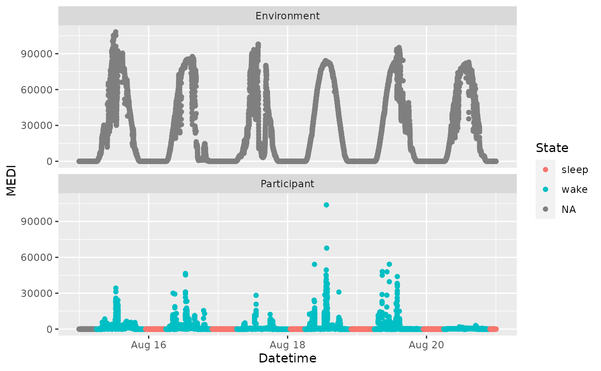

This function can make use of Interval data that contain States (like
"sleep", "wake", "wear") and add a column to a light logger dataset,
where the State of every Datetime is specified, based on the
participant's Id.
Usage
interval2state(
dataset,
State.interval.dataset,
Datetime.colname = Datetime,
State.colname = State,
Interval.colname = Interval,
Id.colname.dataset = Id,
Id.colname.interval = Id,
overwrite = FALSE,
output.dataset = TRUE
)Arguments
- dataset
A light logger dataset. Expects a
dataframe. If not imported by LightLogR, take care to choose a sensible variable for theDatetime.colname.- State.interval.dataset
Name of the dataset that contains
StateandIntervalcolumns. Interval data can be created, e.g., throughsc2interval().- Datetime.colname
column name that contains the datetime. Defaults to
"Datetime"which is automatically correct for data imported with LightLogR. Expects asymbol. Needs to be part of thedataset. Must be of typePOSIXct.- State.colname, Interval.colname
Column names of the
StateandIntervalin theState.interval.dataset. Expects asymbol.Statecan't be in thedatasetyet or the function will give an error. You can also setoverwrite = TRUE.- Id.colname.dataset, Id.colname.interval
Column names of the participant's
Idin both thedatasetand theState.interval.dataset. On the off-chance that there are inconsistencies, the names can be different. If the datasets were imported and preprocessed with LightLogR, this just works. Both datasets need anId, because the states will be added based not only on theDatetime, but also depending on the dataset.- overwrite
If
TRUE(defaults toFALSE), the function will overwrite theState.colnamecolumn if it already exists.- output.dataset
should the output be a
data.frame(DefaultTRUE) or a vector withhms(FALSE) times? Expects alogicalscalar.
Value
One of
a
data.frameobject identical todatasetbut with the state column addeda
vectorwith the states
Examples
#create a interval dataset
library(tibble)
library(dplyr)
library(lubridate)
library(rlang)
library(purrr)
#>
#> Attaching package: ‘purrr’
#> The following objects are masked from ‘package:rlang’:
#>
#> flatten, flatten_chr, flatten_dbl, flatten_int, flatten_lgl,
#> flatten_raw, invoke, splice
states <- tibble::tibble(Datetime = c("2023-08-15 6:00:00",
"2023-08-15 23:00:00",
"2023-08-16 6:00:00",
"2023-08-16 22:00:00",
"2023-08-17 6:30:00",
"2023-08-18 1:00:00",
"2023-08-18 6:00:00",
"2023-08-18 22:00:00",
"2023-08-19 6:00:00",
"2023-08-19 23:00:00",
"2023-08-20 6:00:00",
"2023-08-20 22:00:00"),
State = rep(c("wake", "sleep"), 6),
Wear = rep(c("wear", "no wear"), 6),
Performance = rep(c(100, 0), 6),
Id = "Participant")
intervals <- sc2interval(states)
#create a dataset with states
dataset_with_states <-
sample.data.environment %>%
interval2state(State.interval.dataset = intervals)
#> Warning: The time zone of the dataset and the State.interval.dataset are not the same. This might lead to unexpected results or time shifts.
#visualize the states - note that the states are only added to the respective ID in the dataset
library(ggplot2)
ggplot(dataset_with_states, aes(x = Datetime, y = MEDI, color = State)) +
geom_point() +
facet_wrap(~Id, ncol = 1)

#import multiple State columns from the interval dataset
#interval2state will only add a single State column to the dataset,
#which represents sleep/wake in our case
dataset_with_states[8278:8283,]
#> # A tibble: 6 × 4
#> # Groups: Id [1]
#> Id Datetime MEDI State
#> <chr> <dttm> <dbl> <chr>
#> 1 Participant 2023-08-29 22:59:34 17.7 sleep
#> 2 Participant 2023-08-29 22:59:44 18.1 sleep
#> 3 Participant 2023-08-29 22:59:54 17.9 sleep
#> 4 Participant 2023-08-29 23:00:04 17.2 sleep
#> 5 Participant 2023-08-29 23:00:14 16.9 sleep
#> 6 Participant 2023-08-29 23:00:24 13.7 sleep
#if we want to add multiple columns we can either perfom the function
#multiple times with different states:
dataset_with_states2 <-
dataset_with_states %>%
interval2state(State.interval.dataset = intervals, State.colname = Wear)
#> Warning: The time zone of the dataset and the State.interval.dataset are not the same. This might lead to unexpected results or time shifts.
dataset_with_states2[8278:8283,]
#> # A tibble: 6 × 5
#> # Groups: Id [1]
#> Id Datetime MEDI State Wear
#> <chr> <dttm> <dbl> <chr> <chr>
#> 1 Participant 2023-08-29 22:59:34 17.7 sleep no wear
#> 2 Participant 2023-08-29 22:59:44 18.1 sleep no wear
#> 3 Participant 2023-08-29 22:59:54 17.9 sleep no wear
#> 4 Participant 2023-08-29 23:00:04 17.2 sleep no wear
#> 5 Participant 2023-08-29 23:00:14 16.9 sleep no wear
#> 6 Participant 2023-08-29 23:00:24 13.7 sleep no wear
#or we can use `purrr::reduce` to add multiple columns at once
dataset_with_states3 <-
syms(c("State", "Wear", "Performance")) %>%
reduce(\(x,y) interval2state(x, State.interval.dataset = intervals, State.colname = !!y),
.init = sample.data.environment)
#> Warning: The time zone of the dataset and the State.interval.dataset are not the same. This might lead to unexpected results or time shifts.
#> Warning: The time zone of the dataset and the State.interval.dataset are not the same. This might lead to unexpected results or time shifts.
#> Warning: The time zone of the dataset and the State.interval.dataset are not the same. This might lead to unexpected results or time shifts.
#Note:
# - the State.colnames have to be provided as symbols (`rlang::syms`)
# - the reduce function requires a two argument function `\(x,y)`, where `x`
# is the dataset to be continiously modified and `y` is the symbol of the
# State column name to be added
# - the `!!` operator from `rlang` is used to exchange `y` with each symbol
# - the `.init` argument is the initial dataset to be modified
#this results in all states being applied
dataset_with_states3[8278:8283,]
#> # A tibble: 6 × 6
#> # Groups: Id [1]
#> Id Datetime MEDI State Wear Performance
#> <chr> <dttm> <dbl> <chr> <chr> <dbl>
#> 1 Participant 2023-08-29 22:59:34 17.7 sleep no wear 0
#> 2 Participant 2023-08-29 22:59:44 18.1 sleep no wear 0
#> 3 Participant 2023-08-29 22:59:54 17.9 sleep no wear 0
#> 4 Participant 2023-08-29 23:00:04 17.2 sleep no wear 0
#> 5 Participant 2023-08-29 23:00:14 16.9 sleep no wear 0
#> 6 Participant 2023-08-29 23:00:24 13.7 sleep no wear 0